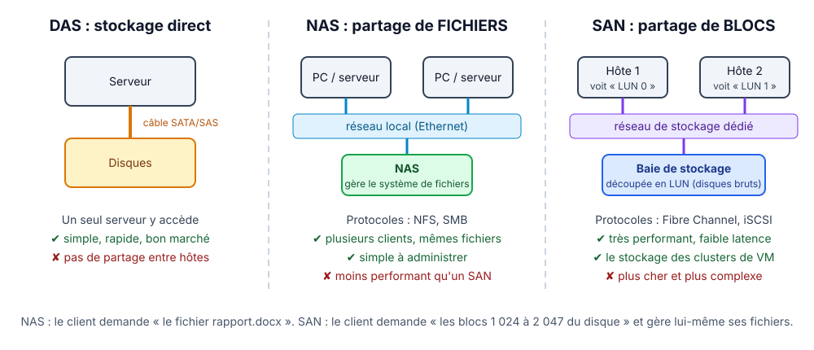

Virtualiser le stockage¶
Résumé
Les VM ont besoin de disques, et en entreprise ces disques ne sont presque jamais « dans » le serveur : ils sont sur un stockage partagé, indispensable à la migration à chaud et à la haute disponibilité vues en partie 5. La virtualisation du stockage consiste à présenter des espaces de stockage logiques (un partage, un disque) indépendamment des disques physiques qui les portent.
Le cours distingue le stockage direct (DAS), le partage de fichiers (NAS, protocoles NFS et SMB) et le partage de blocs (SAN, Fibre Channel et iSCSI), et revient sur le provisionnement fin. Le TP transforme une VM Debian en baie de stockage : elle partage un dossier en NFS et un disque entier en iSCSI. Le serveur web1 monte les deux et l'on constate la différence entre un partage de fichiers et un disque réseau.
| Propriété | Valeur |
|---|---|
| Difficulté | Intermédiaire |
| Durée estimée | 2 h |
| Version décrite | VMware Workstation Pro 26H1, Debian 13.7 (nfs-kernel-server 2.8, targetcli-fb 2.1, open-iscsi 2.1) |
| Place dans le parcours | Partie 7 sur 17 du parcours Virtualisation — jour 2 |
| Dernière mise à jour | 2026-11-16 |
Convention de lecture
🖥️ PC hôte (Windows et Workstation) · 🐧 VM Debian (le nom de la VM est précisé) · ✍️ exercice · 🛟 instantané. Les comptes et mots de passe sont rappelés sur la page d'accueil du parcours.
Prérequis : la partie 6 est terminée : routeur relie le réseau isolé VMnet2 (10.10.10.0/24) à Internet, et web1 est en 10.10.10.10. 🖥️ routeur doit être allumé pendant toute la partie : sans lui, aucune VM de VMnet2 ne peut installer de paquet.
1. Les familles de stockage¶
1.1 DAS, NAS, SAN¶

NAS : on partage des fichiers. SAN : on partage des disques.
| DAS (Direct Attached Storage) | NAS (Network Attached Storage) | SAN (Storage Area Network) | |
|---|---|---|---|
| Ce qui est partagé | Rien : disques d'un seul serveur | Des fichiers et des dossiers | Des blocs : des disques bruts, appelés LUN |
| Qui gère le système de fichiers | Le serveur | Le NAS | Le client (le serveur qui utilise la LUN) |
| Réseau | Câble direct (SATA, SAS, USB) | Réseau local Ethernet | Réseau de stockage dédié : Fibre Channel, ou Ethernet avec iSCSI |
| Protocoles | — | NFS (Linux, VMware), SMB (Windows) | Fibre Channel, iSCSI, FCoE, NVMe over Fabrics |
| Usage typique | Serveur isolé, poste de travail | Partages de fichiers, sauvegardes, stockage de VM pour une PME | Stockage des VM d'un cluster, bases de données |
Une image pour s'en souvenir
Un NAS, c'est une bibliothèque : on demande « le livre rapport.docx » et le bibliothécaire va le chercher ; c'est lui qui sait où sont rangés les livres. Un SAN, c'est un garde-meuble : on reçoit une pièce vide (la LUN) et on y range ses affaires comme on veut ; le gardien ne sait pas ce qu'il y a dedans.
1.2 Ce que la virtualisation apporte au stockage¶
La virtualisation du stockage ajoute une couche logicielle entre les disques physiques et ceux qui les utilisent :
- Regroupement (pooling) : plusieurs disques ou plusieurs baies forment une seule réserve d'espace, découpée à la demande en volumes, partages ou LUN.
- Provisionnement fin (thin provisioning) : comme le disque dynamique d'une VM (partie 4), un volume de 1 To n'occupe que l'espace réellement écrit. On peut sur-allouer, à condition de surveiller le remplissage.
- Instantanés et réplication au niveau de la baie, pour toutes les VM à la fois.
- Migration à chaud des données d'une baie à une autre (Storage vMotion).
Le jour 4 va plus loin avec le stockage défini par logiciel (SDS) et l'hyperconvergence, où le stockage partagé est fabriqué à partir des disques des hôtes eux-mêmes.
1.3 Les protocoles à connaître¶
| Protocole | Type | Port | À retenir |
|---|---|---|---|
| NFS (Network File System) | Fichiers | TCP 2049 | Le partage de fichiers du monde Unix et Linux ; ESXi peut y stocker des VM. Version actuelle : NFSv4.2 |
| SMB (Server Message Block) | Fichiers | TCP 445 | Le partage de fichiers de Windows (dossiers partagés, \\serveur\partage) ; Samba l'implémente sous Linux |
| iSCSI (Internet Small Computer System Interface) | Blocs | TCP 3260 | Des commandes de disque SCSI transportées sur un réseau IP ordinaire : un SAN sans matériel Fibre Channel |
| Fibre Channel | Blocs | — | Réseau de stockage dédié, avec ses propres commutateurs et cartes (HBA) : très performant, coûteux |
Le vocabulaire d'iSCSI :
- la cible (target) est le serveur de stockage qui partage les disques ;
- l'initiateur (initiator) est le client qui s'y connecte ;
- une LUN (Logical Unit Number) est un disque présenté par la cible ;
- un IQN (iSCSI Qualified Name) est le nom unique d'une cible ou d'un initiateur, de la forme
iqn.AAAA-MM.domaine-inversé:nom, par exempleiqn.2026-11.lab.tssr:stockage.
2. TP : préparer la VM de stockage¶
2.1 Créer la VM et son second disque¶
- 🖥️ Créer un clone lié de
modele-debian(instantanémodele-v1) nomméstockage, dansC:\VM\stockage. Mémoire : 1 Go. - 🖥️ VM éteinte, dans VM > Settings : sélectionner Network Adapter, choisir Custom: Specific virtual network > VMnet2.
- 🖥️ Toujours dans VM > Settings, cliquer sur Add…, choisir Hard Disk, puis Next ; choisir le type SCSI (même si l'assistant en propose un autre), Create a new virtual disk, taille 10 Go, garder Split virtual disk into multiple files (comme pour le disque système), puis Finish et OK.
2.2 Personnaliser la VM et lui donner son adresse¶
- 🖥️ Démarrer
stockageet se connecter entssrdans la console de Workstation. -
🐧 stockage : donner son identité au clone :
-
🐧 stockage : dans
/etc/network/interfaces(sudo nano /etc/network/interfaces), remplacer la ligneiface ens33 inet dhcp(garder le nom de carte du fichier) par : -
🐧 stockage : redémarrer (
sudo reboot) et se reconnecter. -
🐧 stockage : indiquer le serveur DNS, avec l'adresse
192.168.x.2notée surrouteuren partie 6, puis vérifier l'accès à Internet : -
🐧 stockage : repérer le nouveau disque :
Le nouveau disque est celui de 10G, sans partition ni point de montage : souvent
sdb. S'il a un autre nom (sdasi le disque système est en NVMe, par exemple), remplacersdbpar ce nom dans toute la suite.Ne jamais choisir le disque qui porte
/Le disque système est celui dont une partition est montée sur
/(colonneMOUNTPOINTS). Le partager en iSCSI, puis le formater depuisweb1, détruirait le système destockage.
3. TP : partager un dossier en NFS¶
3.1 Côté serveur : stockage¶
-
🐧 stockage : installer le serveur NFS et créer le dossier à partager :
chmod 777autorise tout le monde à écrire dans le dossier : c'est pratique pour un lab, à proscrire en production, où l'on gère les droits par utilisateur ou par groupe. -
🐧 stockage : déclarer le partage dans
/etc/exports, le fichier qui liste les dossiers partagés et les machines autorisées :
Que veulent dire ces options ?
10.10.10.0/24: seules les machines du réseau interne peuvent monter le partage.rw: lecture et écriture.sync: le serveur confirme une écriture seulement quand elle est sur le disque (plus sûr, un peu plus lent).no_subtree_check: désactive une vérification inutile quand on partage un dossier entier.exportfs -vaffiche aussi des options par défaut, dontroot_squash: l'utilisateurrootd'un client est traité comme un utilisateur sans droits sur le partage. Un client compromis ne devient pasrootsur le serveur de fichiers.
3.2 Côté client : web1¶
-
🐧 web1 : installer le client NFS, créer le point de montage et monter le partage :
-
🐧 web1 : écrire un fichier dans le partage et vérifier le montage :
-
🐧 stockage : vérifier que le fichier est bien arrivé :
cat /srv/partage/test.txt.
Vérifier son lab
- Sur
web1,findmnt /mnt/partageaffiche la source10.10.10.20:/srv/partageet le typenfs4: le client a choisi automatiquement NFS version 4 (findmnt -o SOURCE,FSTYPE,OPTIONS /mnt/partagedétaillevers=4.2). - Sur
stockage,cat /srv/partage/test.txtafficheécrit depuis web1, etls -l /srv/partagemontre le fichier appartenant àtssr: sur le serveur, c'est un fichier ordinaire, dans un système de fichiers que gère le serveur.
3.3 Monter le partage automatiquement¶
🐧 web1 : pour que le partage soit monté à chaque démarrage, l'ajouter à /etc/fstab, le fichier des systèmes de fichiers à monter :
echo "10.10.10.20:/srv/partage /mnt/partage nfs defaults,_netdev,nofail 0 0" | sudo tee -a /etc/fstab
sudo systemctl daemon-reload
sudo umount /mnt/partage
sudo mount -a
findmnt /mnt/partage
L'option _netdev indique qu'il s'agit d'un stockage réseau : il ne doit être monté qu'une fois le réseau disponible. L'option nofail permet à web1 de démarrer normalement même si stockage est éteint (sans le partage, et sans attendre une minute et demie). Démarrer de préférence routeur, puis stockage, puis web1. mount -a monte tout ce qui est dans /etc/fstab : s'il ne répond rien et que findmnt affiche le partage, la ligne est correcte. Après un sudo reboot, le partage est remonté automatiquement.
Toujours tester /etc/fstab avec mount -a
Une erreur dans /etc/fstab peut empêcher la machine de démarrer normalement. On vérifie donc chaque modification avec sudo mount -a avant de redémarrer.
4. TP : partager un disque en iSCSI¶
4.1 Côté serveur : créer la cible¶
On utilise targetcli, l'outil qui pilote la cible iSCSI intégrée au noyau Linux (LIO).
🐧 stockage :
sudo apt install -y targetcli-fb
sudo targetcli /backstores/block create name=lun0 dev=/dev/sdb
sudo targetcli /iscsi create iqn.2026-11.lab.tssr:stockage
sudo targetcli /iscsi/iqn.2026-11.lab.tssr:stockage/tpg1/luns create /backstores/block/lun0
sudo targetcli /iscsi/iqn.2026-11.lab.tssr:stockage/tpg1/acls create iqn.2026-11.lab.tssr:web1
sudo targetcli saveconfig
sudo targetcli ls
systemctl is-enabled rtslib-fb-targetctl
Ces commandes, dans l'ordre :
- déclarent le disque
/dev/sdbcomme espace de stockage (backstore) nommélun0; - créent la cible iSCSI et son IQN ; targetcli ajoute automatiquement un portail qui écoute sur toutes les adresses, port 3260 ;
- exposent
lun0comme LUN 0 de cette cible ; - créent une ACL (liste de contrôle d'accès) : seul un initiateur qui se présente sous le nom
iqn.2026-11.lab.tssr:web1pourra se connecter (un filtre sur le nom, sans mot de passe : voir la question 4 de révision) ; - enregistrent la configuration dans
/etc/rtslib-fb-target/saveconfig.json, que le servicertslib-fb-targetctlrecharge à chaque démarrage ; - vérifient que ce service est bien activé au démarrage : la réponse doit être
enabled(c'est le cas après l'installation detargetcli-fb; sinon,sudo systemctl enable rtslib-fb-targetctl).
Vérifier son lab
sudo targetcli ls affiche l'arbre de la configuration : lun0 sous backstores/block avec [/dev/sdb (10.0GiB) write-thru activated], la cible iqn.2026-11.lab.tssr:stockage, son ACL iqn.2026-11.lab.tssr:web1 avec [Mapped LUNs: 1], et le portail 0.0.0.0:3260. La commande ss -ltn | grep 3260 montre le port en écoute.
4.2 Côté client : se connecter à la cible¶
-
🐧 web1 : installer l'initiateur iSCSI :
-
🐧 web1 : donner à l'initiateur le nom autorisé par l'ACL. Le fichier
/etc/iscsi/initiatorname.iscsicontient un nom généré au hasard (iqn.1993-08.org.debian:01:…) ; le remplacer, puis redémarrer le service : -
🐧 web1 : découvrir les cibles proposées par
stockage, puis s'y connecter : -
🐧 web1 : un nouveau disque est apparu :
-
🐧 web1 : le formater et le monter, exactement comme un disque local (remplacer
sdbpar le nom affiché parlsblk) :
Vérifier son lab
- La découverte répond
10.10.10.20:3260,1 iqn.2026-11.lab.tssr:stockage, et la connexion se termine parLogin to [iface: default, target: iqn.2026-11.lab.tssr:stockage, portal: 10.10.10.20,3260] successful. lsblkaffiche un disque de 10G dont la colonneTRAN(transport) vautiscsi, le fabricantLIO-ORGet le modèlelun0: pourweb1, c'est un disque, pas un partage.df -h /mnt/iscsiaffiche un système de fichiers d'environ 9,8G, géré parweb1lui-même.
Une LUN, un seul client à la fois
Le système de fichiers ext4 du disque iSCSI est géré par web1, pas par le serveur de stockage. Si un second client montait la même LUN en même temps, chacun écrirait sans savoir ce que fait l'autre, et le système de fichiers serait détruit. Pour partager un disque bloc entre plusieurs hôtes (cas des clusters de VM), il faut un système de fichiers de cluster conçu pour cela : VMFS chez VMware, CSV chez Microsoft, OCFS2 ou GFS2 sous Linux.
4.3 Comparer¶
✍️ Remplir ce tableau à partir de ce qui vient d'être fait.
| Question | NFS | iSCSI |
|---|---|---|
Ce que voit web1 |
||
| Qui a créé le système de fichiers ? | ||
Le serveur stockage peut-il lire les fichiers de web1 ? |
||
| Plusieurs clients peuvent-ils l'utiliser en même temps ? | ||
| Famille |
Corrigé
| Question | NFS | iSCSI |
|---|---|---|
Ce que voit web1 |
Un dossier réseau, monté en nfs4 |
Un disque de 10 Go (souvent sdb), transport iscsi |
| Qui a créé le système de fichiers ? | Le serveur stockage (c'est son disque système) |
Le client web1 (mkfs.ext4) |
| Le serveur peut-il lire les fichiers ? | Oui : ce sont des fichiers ordinaires dans /srv/partage |
Non, pas directement : pour lui, son disque de 10 Go n'est qu'une suite de blocs que web1 a formatés |
| Plusieurs clients en même temps ? | Oui, c'est fait pour | Non avec ext4 ; oui avec un système de fichiers de cluster (VMFS, CSV…) |
| Famille | NAS (fichiers) | SAN (blocs) |
Dépannage NFS et iSCSI
mount.nfs: access denied by server while mounting: le réseau autorisé est mal écrit dans/etc/exports, ousudo exportfs -raa été oublié. Vérifier avecsudo exportfs -vsurstockage.mountreste bloqué :stockageest éteint ou injoignable (ping 10.10.10.20depuisweb1).- La découverte iSCSI répond
No route to hostouConnection refused:stockageest éteint, ou le portail est absent (sudo targetcli lssurstockage). - La connexion échoue avec une erreur d'autorisation (authorization failure) : le nom de
/etc/iscsi/initiatorname.iscsisurweb1ne correspond pas exactement à l'ACL créée surstockage(faute de frappe fréquente). Corriger le fichier, puissudo systemctl restart iscsidet recommencer la découverte et la connexion.
- 🐧 web1 puis 🐧 stockage : éteindre les deux VM, dans cet ordre (
sudo poweroff). - 🛟 🖥️ Prendre sur chacune l'instantané
stockage-ok(le même nom sur les deux : il marque l'état du lab à la fin de la partie 7).
5. Questions de révision¶
- Quelles sont les différences entre un SAN et un NAS ?
- Que signifie SMB ? Sur quel port fonctionne-t-il ?
- Dans iSCSI, qu'est-ce qu'une cible, un initiateur, une LUN et un IQN ?
- Pourquoi a-t-on créé une ACL sur la cible iSCSI ?
- Pourquoi ne faut-il pas monter la même LUN formatée en ext4 sur deux serveurs à la fois ?
- À quoi sert l'option
_netdevdans/etc/fstab?
Corrigé
- Un NAS partage des fichiers sur le réseau local, avec NFS ou SMB : c'est lui qui gère le système de fichiers, et plusieurs clients lisent les mêmes fichiers. Un SAN partage des blocs (des disques bruts, les LUN) sur un réseau de stockage dédié, en Fibre Channel ou en iSCSI : chaque serveur formate et gère lui-même son disque. Le SAN est plus performant et a une latence plus faible ; le NAS est plus simple à utiliser et à administrer, et moins cher.
- Server Message Block : le protocole client-serveur de partage de fichiers, de dossiers et d'imprimantes de Windows. Il fonctionne sur le port TCP 445. Sous Linux, Samba le met en œuvre.
- La cible est le serveur de stockage qui partage les disques ; l'initiateur est le client qui s'y connecte ; une LUN est un disque logique présenté par la cible ; un IQN est le nom unique d'une cible ou d'un initiateur (
iqn.2026-11.lab.tssr:stockage). - Pour que seul l'initiateur dont le nom est autorisé (
web1) puisse se connecter au disque. C'est un premier filtre, mais faible : un IQN n'est pas un secret, et n'importe quelle machine peut prendre ce nom (on l'a fait soi-même dans le TP). En production, on ajoute une authentification CHAP (identifiant et mot de passe) et on isole le réseau de stockage (réseau ou VLAN dédié). - Le système de fichiers ext4 est géré par chaque client, qui garde en mémoire sa propre vision du disque. Deux clients écriraient sans se coordonner et détruiraient le système de fichiers. Il faut un système de fichiers de cluster (VMFS, CSV, GFS2, OCFS2).
- Elle indique un système de fichiers réseau : le système attend que le réseau soit disponible avant de le monter, et le démonte avant de couper le réseau à l'arrêt. (
nofail, elle, évite de bloquer le démarrage si le serveur NFS est absent.)
Ressources¶
- SNIA — What is a SAN? — l'association de l'industrie du stockage définit les réseaux de stockage (en anglais).
- RFC 7143 — iSCSI — la norme du protocole iSCSI (en anglais).
- Wiki Debian — NFS Server Setup — installation d'un serveur NFS sous Debian (en anglais).
- Manuel Debian —
targetcli(8)— toutes les commandes de targetcli (en anglais). - Manuel Debian —
iscsiadm(8)— l'outil de l'initiateur iSCSI (en anglais). - Partie précédente : Virtualiser le réseau · Partie suivante : Défi du jour 2.